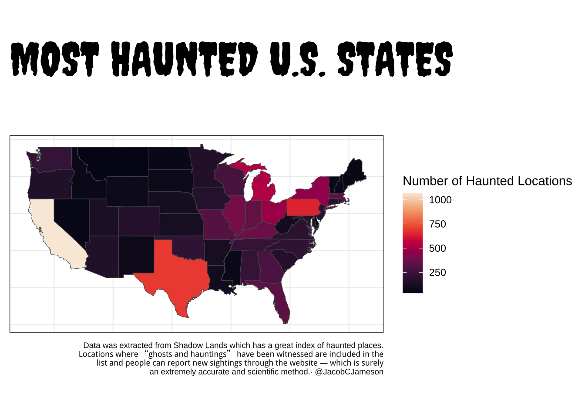
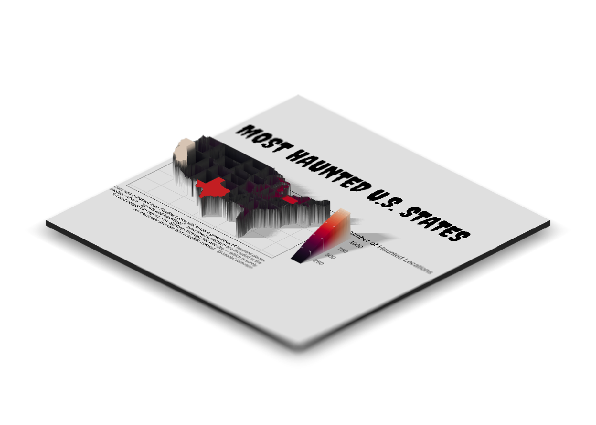

# libraries we need
libs <- c("rayshader", "tidyverse", "sf", "showtext",
"classInt", "giscoR", "terra", "exactextractr", "viridis")
# install missing libraries
installed_libs <- libs %in% rownames(installed.packages())
if (any(installed_libs == F)) {
install.packages(libs[!installed_libs])
}
# load libraries
invisible(lapply(libs, library, character.only = T))
font_add_google("Creepster", "creepster")
font_add_google("Nosifer", "nosifer")
font_add_google("Share Tech Mono", "techmono")
showtext_opts(dpi = 320)
showtext_auto(enable = TRUE)Most Haunted Places in America
usa <- st_as_sf(maps::map("state", fill=TRUE, plot =FALSE))
haunted <- read_csv('haunted_places.csv')
haunted$ID = tolower(haunted$state)
haunted <- haunted %>%
group_by(ID) %>% summarize(`Number of Haunted Locations` = n())
haunts <- merge(usa, haunted, by='ID')
gg_nc = ggplot(haunts) +
geom_sf(aes(fill = `Number of Haunted Locations`)) +
scale_fill_viridis(option = "F") + theme_bw() +labs(
title = str_to_upper("Most Haunted U.S. States\n"),
caption = str_wrap("Data was extracted from Shadow Lands which has a great
index of haunted places. Locations where “ghosts and hauntings”
have been witnessed are included in the list and people can
report new sightings through the website — which is surely
an extremely accurate and scientific method.· @JacobCJameson"), 50) +
theme(
plot.title = element_text(family = "creepster", size = 40),
plot.caption = element_text(color = "#111111", size = 7),
axis.line=element_blank(),
axis.text.x=element_blank(),
axis.title.x=element_blank(),
axis.text.y=element_blank(),
axis.title.y=element_blank(),
axis.ticks=element_blank(), panel.background = element_blank())
gg_nc
plot_gg(gg_nc
, width=6
, height = 6
, multicore = TRUE
, windowsize = c(1400,866)
, sunangle=225
, zoom = 0.60
, phi = 30
, theta = 45
)
render_depth(focallength=50)